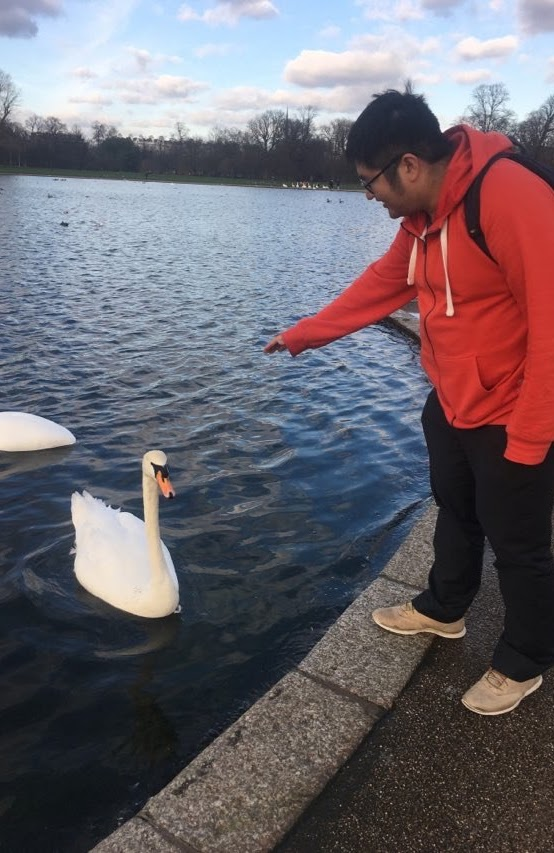

I am an associate researcher at the Morningside Center of Mathematics, Academy of Mathematics and Systems Science, CAS.
My research interests include low-dimensional topology, gauge theory and differential geometry. I have worked on topics such as the Kapustin–Witten equations, Higgs bundles, multivalued harmonic forms and spinors, SL(2,C) character varieties for 3-manifolds and calibrated submanifolds.
Previously, I was a research assistant professor at the Simons Center for Geometry and Physics, Stony Brook University, with mentor Simon Donaldson. I received my Ph.D. from the California Institute of Technology under the supervision of Ciprian Manolescu and Yi Ni. Before that, I was an undergraduate student at Peking University.
The Morningside Center of Mathematics has a visitor scholar program. Please feel free to contact me if you are interested.

Photo credit: Sun Song.